29/42 lolos audit dan terpasang. Semua karakter dipilih dari entri dengan informasi lengkap. Ilustrasi adalah interpretasi artistik AI berdasarkan sumber riset.
Nüwa
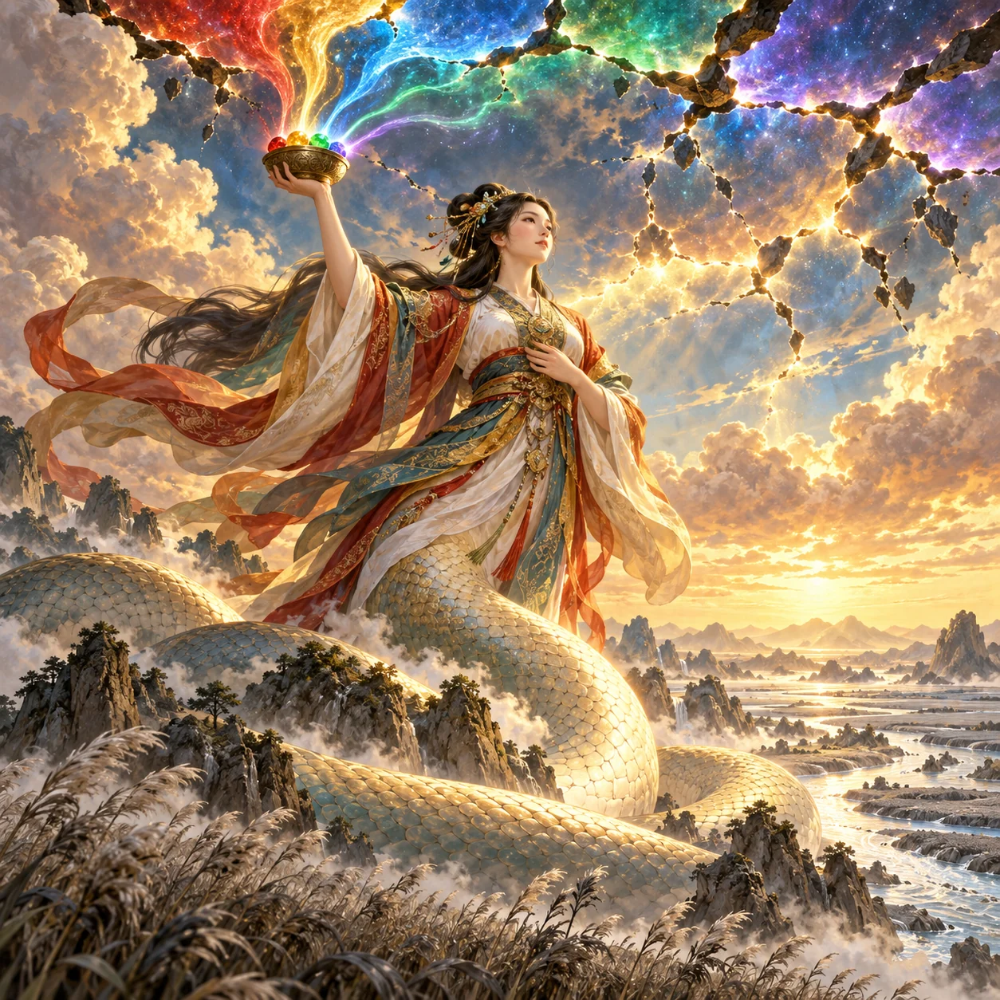
Human-headed divine sage with serpent body repairing the five-coloured sky.
Aura: Five coloured molten stone light in repaired sky grounded in nuwa-c04 and nuwa-c11.
Audit ciri dan sumber
- Human head and single serpent body, two arms (nuwa-c09)
- Five coloured molten stone streams mend broken heaven (nuwa-c04, nuwa-c11)
- Receding flood and reed-ash banks (nuwa-c12)
Viewed native second attempt: two arms, one human head and serpent coil; five coloured sky repair, reed foreground and receding water; fully clothed, no text.
Review sumberUse case: stylized-concept. Square premium painterly Mythics illustration of majestic Nüwa repairing heaven. One human-headed Chinese divine sage with a single immense serpentine lower body, fully modestly robed upper body (nuwa-c09). EXACTLY TWO ARMS AND TWO HANDS TOTAL: keep her LEFT hand resting against her torso and her RIGHT hand raised once holding a small bowl of five colored molten stones. No duplicate arms anywhere; simple clearly readable pose. Five luminous colors stream upward from this single bowl to mend enormous cracks in the sky (nuwa-c04, nuwa-c11). Floodwaters recede behind grey reed-ash banks below (nuwa-c12). One vast serpent coil among tiny mountains; low camera angle; majestic benevolent expression; cinematic warm gold illumination and five-color sky, rich painterly detail, original historical inspired Chinese robes. No horns, wings, extra limbs, text, watermark, nudity, gore, frame or designs from films/games/anime.
Fenghuang
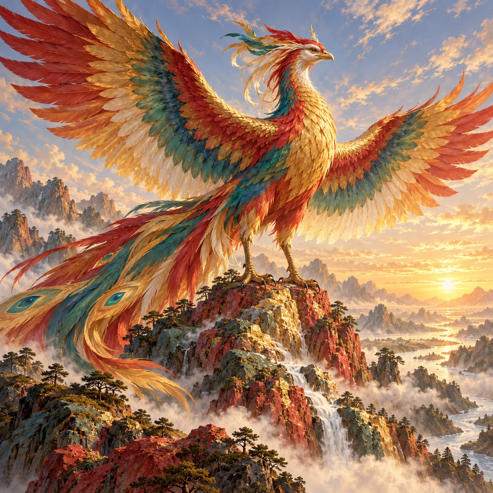
Shanhaijing five-coloured chicken-shaped auspicious bird.
Aura: Natural sunrise and immense composition; no emitted fire.
Audit ciri dan sumber
- One chicken-shaped bird with five coloured pattern, two wings and two legs (fenghuang-c07)
- Mount Danxue gold/jade and river (fenghuang-c09)
- Peaceful sovereign presence, no Western phoenix fire (fenghuang-c08, fenghuang-c03)
Native inspected: one five-coloured crested avian body, two spread wings and two feet, gold/jade mountain with river, majestic natural dawn. No fire, extra beings, text or watermark.
Review sumberUse case: stylized-concept. Square premium painterly Mythics illustration of FENGHUANG, the majestic Chinese auspicious sovereign of birds. Select the Shanhaijing chicken-shaped variant: one immense elegant chicken-shaped five-coloured bird (fenghuang-c07), exactly one head, two feathered wings and two bird legs. Rich five-colour plumage without lettering. Stands wing-spread on Mount Danxue with gold and jade rock and a river descending below (fenghuang-c09). Its peaceful appearance brings peace (fenghuang-c08); convey sublime serenity with natural golden dawn and tiny mountain trees for immense scale, low viewpoint, graceful strong silhouette, cinematic painterly brushwork. All light is environmental: no fire, resurrection, flames or western phoenix effects, no glowing eyes or spell ribbons, no dragons or additional beings, text, logo, watermark, border, gore or contemporary entertainment imitation.
Gangā
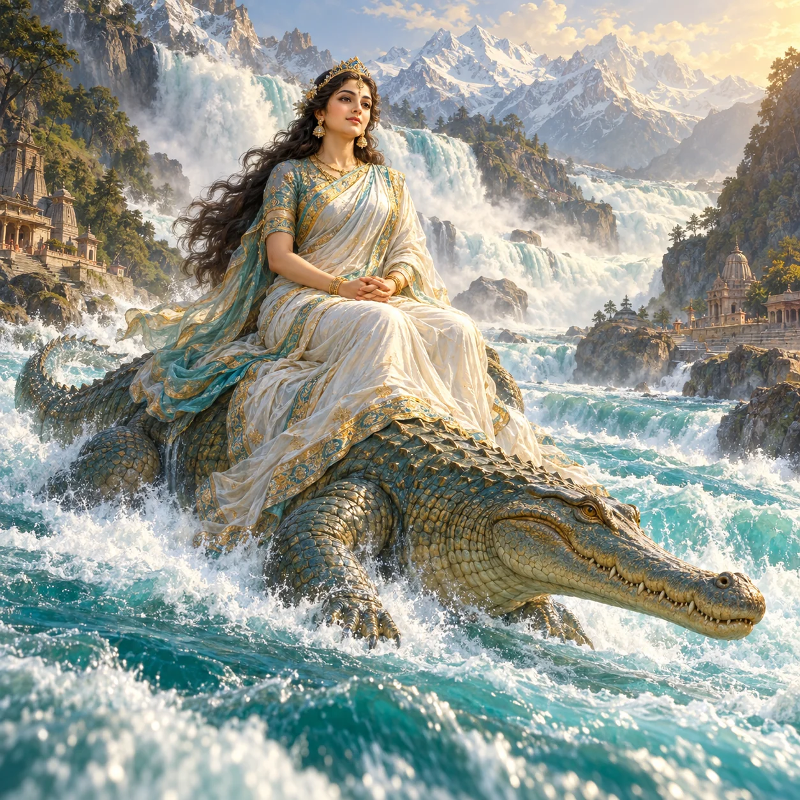
Respectful river goddess riding a crocodile-like makara.
Aura: Immense river flow and sunlit purification water (ganga-c01).
Audit ciri dan sumber
- One covered goddess, two arms (ganga-c01; unspecified limb count rendered conservatively)
- One crocodile-like makara mount (ganga-c02)
- Powerful sacred river cascade and purification domain (ganga-c01)
Viewed native second attempt: one fully sari-covered goddess, two arms and clasped hands, one coherent crocodile mount, immense river and waterfalls, no invented emitted effects or text.
Review sumberUse case: stylized-concept. Square premium painterly Mythics art of Ganga, respectfully depicted as sacred Ganges river goddess of purification (ganga-c01), seated upon one majestic divine crocodile-like makara (ganga-c02). ONE HEAD AND EXACTLY TWO ARMS: both hands together clasped quietly in her lap, two hands total, no other hands or arms, no held objects. Her entire torso and legs covered in elegant flowing sari. Single crocodile-like mount with one long snout, scaled back and four crocodilian legs, no ornaments shaped like extra limbs. Vast powerful turquoise Ganges cascades through distant mountains and flows around her, monumental low viewpoint with tiny riverbank temples for scale. Calm benevolent dignified face, natural golden cinematic light through river spray. Painterly rich detail, original traditional respectful design. No floating lotus, weapons, fire, lightning, halos, additional people, nudity, cleavage, text, watermark, border or movie/game/anime designs. Keep simple clear anatomy, two hands only clasped on lap.
Tengri
Menunggu gambar yang lolos audit
Abzu
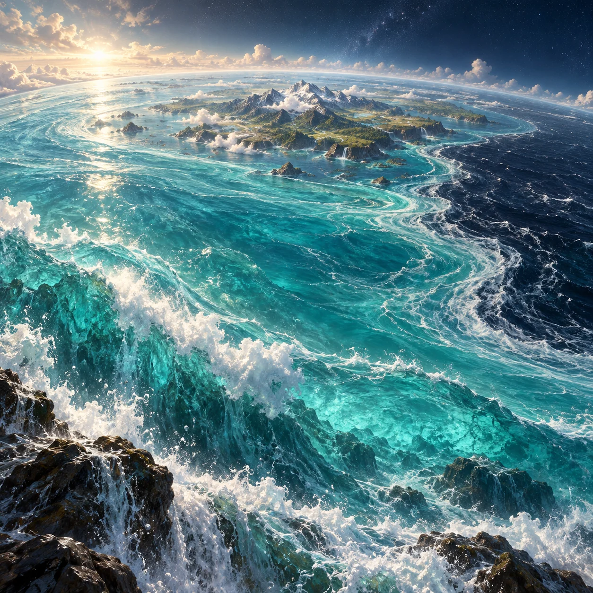
Aniconic primordial freshwater encircling earth.
Aura: Monumental freshwater currents, documented water domain.
Audit ciri dan sumber
- Immense freshwater circle around earth (abzu-c01,c02)
- Boundary mingles fresh and salt waters (abzu-c03)
- No invented physical body
Native viewed: immense turquoise freshwater curls around land and mixes into darker water; no invented body or emitted powers.
Review sumberUse case: stylized-concept. Square premium Mythics painterly illustration, monumental low viewpoint, tiny environmental scale references, cinematic natural lighting, rich brush texture, strong silhouette, no text, logo, watermark, border, gore, nudity or film/game/anime imitation. ABZU/APSU, the primordial freshwater deity encircling the earth (abzu-c01,c02), represented aniconically as immense translucent turquoise freshwater surrounding a small distant island-world. Sweeping deep currents wrap around rocky land, mixing at a clear visual boundary with darker salt-water expanse (abzu-c03). Atmospheric cosmic scale, low viewpoint near crashing foreground fresh-water waves, horizon curves around distant earth. No humanoid body, face, dragon, snake, extra gods or invented anatomy; no spell rays or fire.
Seshat
Menunggu gambar yang lolos audit
Vairocana
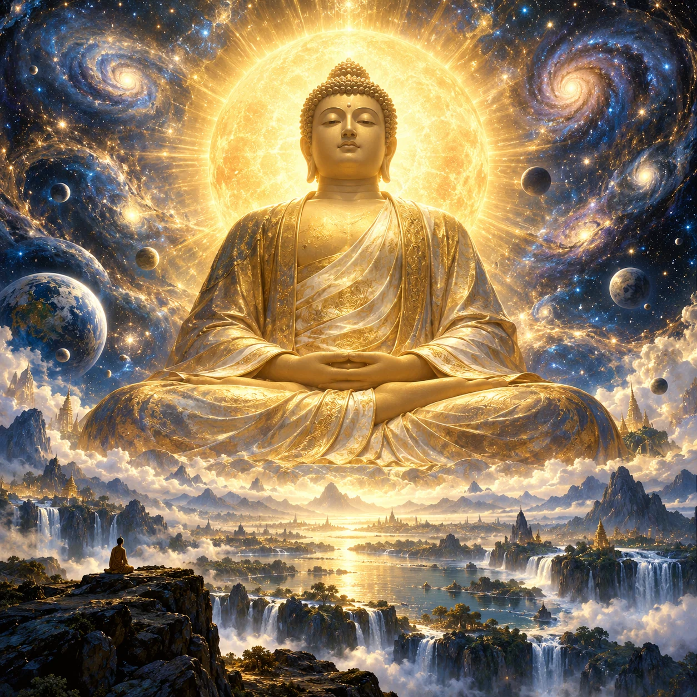
Respectful cosmic Buddha with Great Sun and entire universe symbolism.
Aura: Great Sun light and cosmic universe, grounded in vairocana-c02,c04.
Audit ciri dan sumber
- Single fully robed Buddha, conservative one-head two-arm seated depiction (vairocana-c01)
- Great Sun radiant background (vairocana-c02)
- Cosmic universe surround (vairocana-c04)
Native inspected: one robed seated Buddha, two arms and hands in lap, Great Sun background and cosmic universe; dignified portrait no extra heads, text or watermark.
Review sumberUse case: stylized-concept. Square premium Mythics painterly illustration, monumental low viewpoint, tiny environmental scale references, cinematic light, rich brush texture, no text, logo, watermark, border, gore, nudity or film/game/anime imitation. Respectful VAIROCANA cosmic Buddha: one serene Buddha clothed fully in monastic robes, one head, exactly TWO arms and hands folded calmly together on his lap, seated meditation; vast cosmic universe contained as celestial space around his monumental silhouette (vairocana-c01,c04). Solar radiance forms a brilliant gentle great-sun backdrop grounded in Mahavairocana meaning Great Sun (vairocana-c02), luminous stars and distant galaxies as whole-universe body symbolism (vairocana-c04). No extra faces or limbs, no weapons, no aggressive flames. Original sacred dignity, naturalistic painterly cosmic gold and deep blue.
Ashur
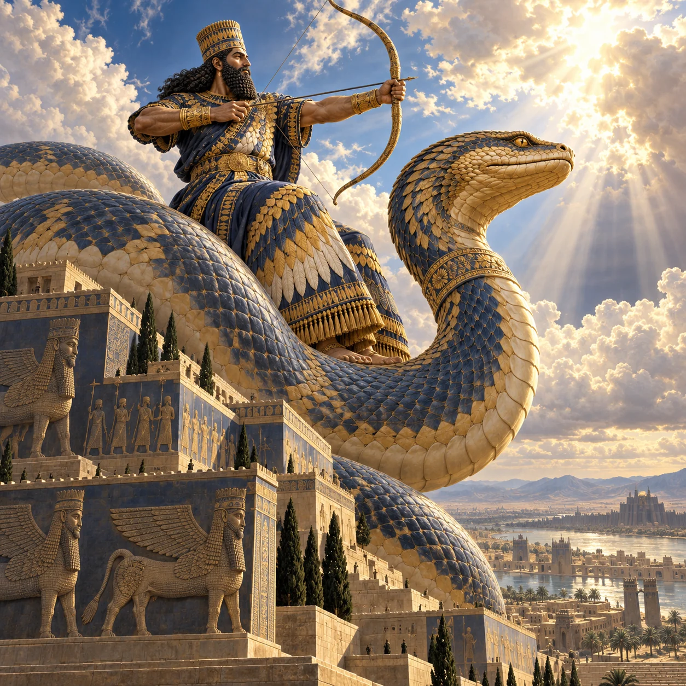
Feather-robed archer riding serpent.
Aura: Natural cinematic heavens; no invented emitted attacks.
Audit ciri dan sumber
- One feather-robed archer (ashur-c05)
- One serpent mount, selected instead of dragon variant (ashur-c05)
- Monumental sky and war authority (ashur-c03)
Native inspected: one feather-robed two-arm archer on single serpent, monumental Assyrian terrace and natural heavens, no emitted magic or extra anatomy.
Review sumberUse case: stylized-concept. Square premium Mythics painterly illustration, monumental low viewpoint, tiny environmental scale references, cinematic light, rich brush texture, no text, logo, watermark, border, gore, nudity or film/game/anime imitation. ASHUR, supreme Assyrian sky and war deity (ashur-c01,c03). A single majestic male archer FULLY dressed in a feather-patterned robe, riding ONE immense serpent (ashur-c05); human one head, TWO arms holding a single bow in a clear simple pose. Single legless serpent body winds around ancient Assyrian monumental stone terrace. Vast heavens above, strong natural sunlight through clouds dramatizes Lord of Whole Heavens (ashur-c03). No wings on deity, no magical arrows, lightning or fire powers. Bearded face and robe detailing editorial, ancient relief-inspired original design.
Balarama
Menunggu gambar yang lolos audit
Baphomet
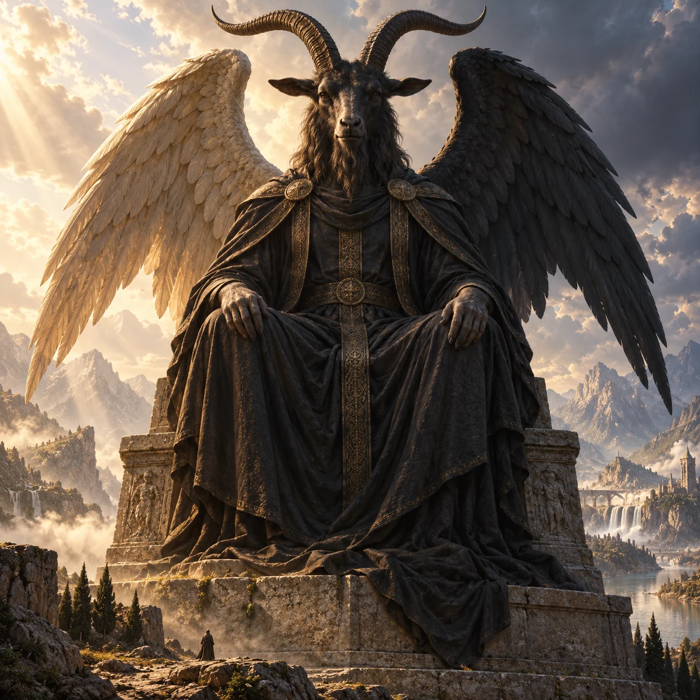
Modestly clothed Levi winged human-goat symbolic hybrid.
Aura: Balanced natural light and shadow, symbolic equilibrium.
Audit ciri dan sumber
- One winged human-goat hybrid (baphomet-c04)
- Covered torso, two arms and two wings
- Balanced light/shadow opposites (baphomet-c05), no invented emitted power
Native inspected: one goat head/two horns, two wings, two arms on knees, fully opaque clothed torso; balanced natural light/shadow, no emitted attacks or text.
Review sumberUse case: stylized-concept. Square premium Mythics painterly art, monumental low viewpoint, tiny landscape scale references, cinematic natural light, rich brush texture, no text, watermark, frame, gore, nudity or film/game/anime imitation. BAPHOMET in the documented Levi symbolic winged human-goat hybrid variant (baphomet-c03,c04). One goat head, two goat horns, exactly two large wings and two arms; sit on monumental stone plinth. Torso FULLY covered by opaque dark long tunic and cloak, no exposed breasts or abdomen. Equilibrium of opposites shown by balanced light and shadow across wings (baphomet-c05), natural shafts of light opposing deep shade. Both hands rest on knees, simple two-arm pose. No flames, forehead fire, floating glyphs, spell attacks or pentagram lettering; occult knowledge conveyed through imposing dignity, no invented powers.
Dagon
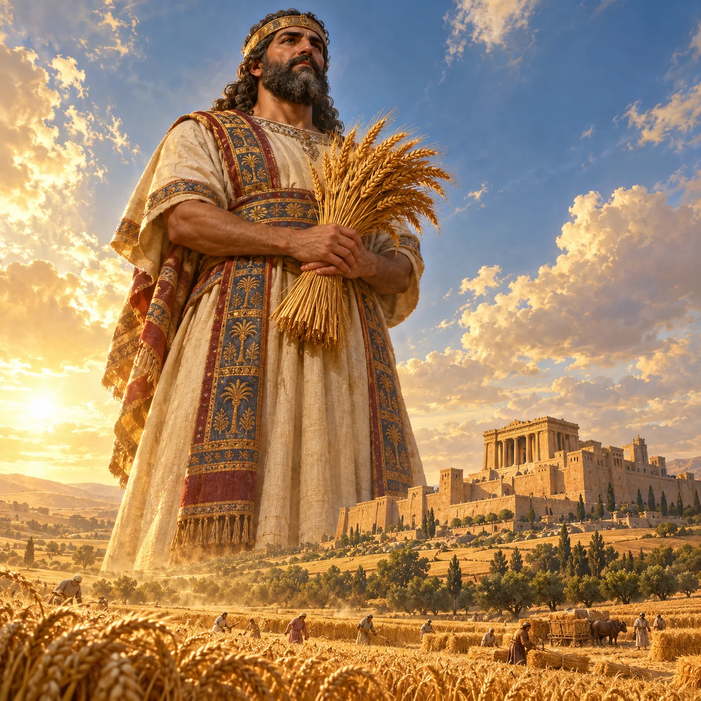
Conservative clothed anthropomorphic grain deity, explicitly no fish form.
Aura: Natural sunlight on abundant wheat; grain domain.
Audit ciri dan sumber
- Grain and fertility landscape (dagon-c06)
- Ancient Syrian temple (dagon-c01,c02)
- No fish-shaped water deity interpretation (dagon-c05)
Native inspected: one modest humanlike Syrian deity, two arms holding wheat, rich wheat landscape, no fish anatomy, water or magical emission.
Review sumberUse case: stylized-concept. Square premium Mythics painterly art, monumental low viewpoint, tiny landscape scale references, cinematic natural light, rich brush texture, no text, watermark, frame, gore, nudity or film/game/anime imitation. DAGON/DAGAN, ancient Syrian grain and fertility god (dagon-c01,c06), respectfully depicted as one monumental fully clothed mature male deity in ancient Syrian robes standing over expansive ripening wheat fields and stone temple at Tuttul (dagon-c02). Ordinary human head and TWO arms; both hands clasped around a single sheaf of wheat at waist. No fish head, fish tail, scales, fins or sea (dagon-c05 expressly rejects fish deity interpretation). Grain fertility shown by abundant golden crops, sunlit harvest dust and immense low-angle presence, no lightning, fire or levitating grain. Exact human form editorial only.
El
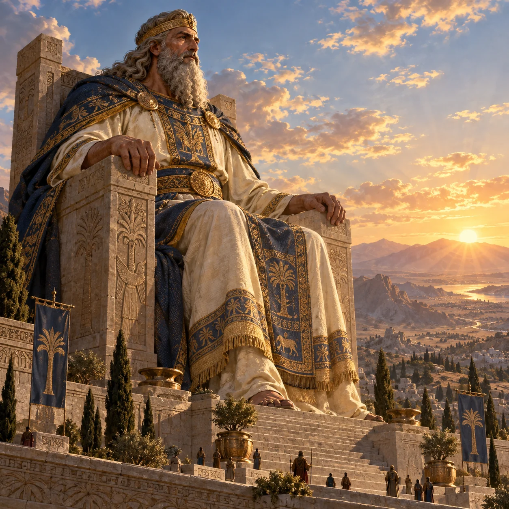
Editorial clothed venerable Canaanite father-king.
Aura: Natural royal dawn and immense scale; no emitted powers.
Audit ciri dan sumber
- Majestic father-king and divine council setting (el-c02,c03,c04)
- Conservative ordinary human editorial body
- No literal bull anatomy inferred from epithet
Native inspected: one clothed venerable humanlike father-king with two arms on throne, monumental court, natural sunrise, no bull hybrid anatomy or invented effects.
Review sumberUse case: stylized-concept. Square premium Mythics painterly art, monumental low viewpoint, tiny landscape scale references, cinematic natural light, rich brush texture, no text, watermark, frame, gore, nudity or film/game/anime imitation. EL, supreme ancient Canaanite deity, father of gods and mankind and presiding king (el-c01,c02,c03,c04). One immense venerable fully clothed male royal figure seated on a stone throne in an open Canaanite court overlooking tiny mountains. One human head, two arms, hands calmly resting on throne armrests. No bull head or literal hybrid anatomy: Bull El is documented epithet only (el-c04). Creation/fatherly authority conveyed by majestic natural sunrise and vast scale, no unsupported energy beams, wings or flames. Ancient woven robes, thoughtful face, strong silhouette, original design.
Izanagi
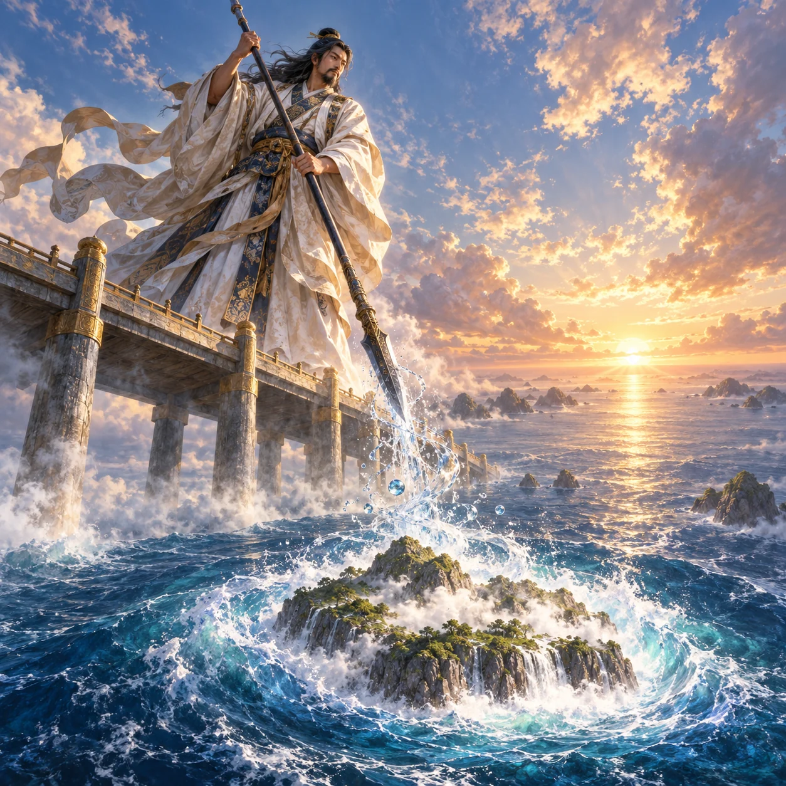
Izanagi stirring primordial sea from heavenly bridge.
Aura: Ocean creation and island-forming droplets (izanagi-c03).
Audit ciri dan sumber
- One clothed kami two-arm editorial anatomy (izanagi-c01)
- Heavenly bridge, spear stirred sea, droplets form island (izanagi-c03)
Native inspected: one fully robed two-arm kami on celestial bridge, one spear stirring immense sea and droplets around formed island, no extra limbs or unsupported effects.
Review sumberUse case: stylized-concept. Square premium Mythics painterly art, monumental low viewpoint, tiny environmental scale references, cinematic rich lighting and brush texture. Original respectful religious depiction, no text, watermark, frame, gore, nudity or film/game/anime imitation. IZANAGI, Shinto primordial creator (izanagi-c01,c02). One majestic fully clothed male kami in ancient Japanese layered robes, one head TWO arms, gripping ONE long spear with both hands in simple pose. Stands on a celestial bridge over the immense primordial sea, spear tip stirring ocean, falling water droplets coalesce into a new small Onogoro island (izanagi-c03). Clearly visible water creation effect, no fire, lightning or invented wings. Respectful commanding face, cinematic dawn and ocean vastness.
Jade Emperor
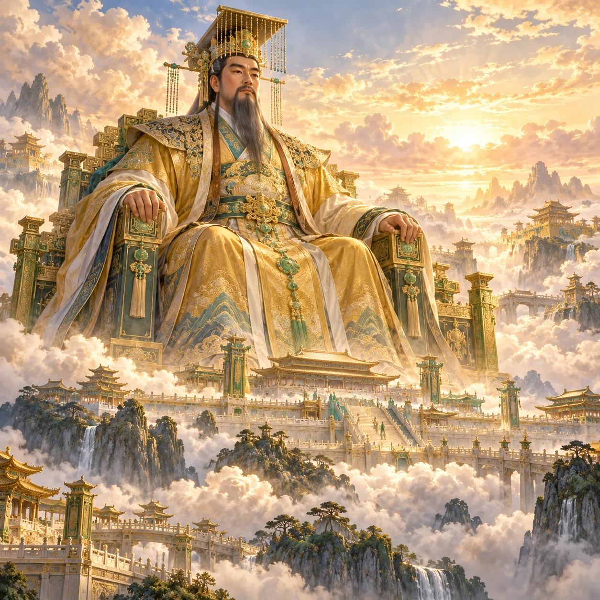
Respectful Chinese heavenly monarch enthroned.
Aura: Natural heavenly palace light, no adult emitted birth light.
Audit ciri dan sumber
- Heavenly emperor authority (jade-emperor-c06)
- Covered conservative humanlike body, two arms
- Jade purity symbolism, natural lighting (jade-emperor-c07)
Native inspected: one fully imperial-robed two-arm emperor on immense throne above heavenly palace, natural dawn, no unsupported adult emission.
Review sumberUse case: stylized-concept. Square premium Mythics painterly art, monumental low viewpoint, tiny environmental scale references, cinematic rich lighting and brush texture. Original respectful religious depiction, no text, watermark, frame, gore, nudity or film/game/anime imitation. JADE EMPEROR, respectful Chinese heavenly monarch (jade-emperor-c01,c06). One immense dignified fully clothed emperor in layered imperial robes and formal headwear seated upright above heavenly palace terraces. One head TWO arms, both hands rest calmly on throne armrests. Distant palaces and mountains far below show cosmic royal scale. Natural brilliant dawn behind clouds; do not transfer extraordinary birth light from crown-prince story into unsupported adult body emission. No lightning, wings, fire or magic attacks, no dragons. Rich jade accents and natural golden atmosphere.
Kubera
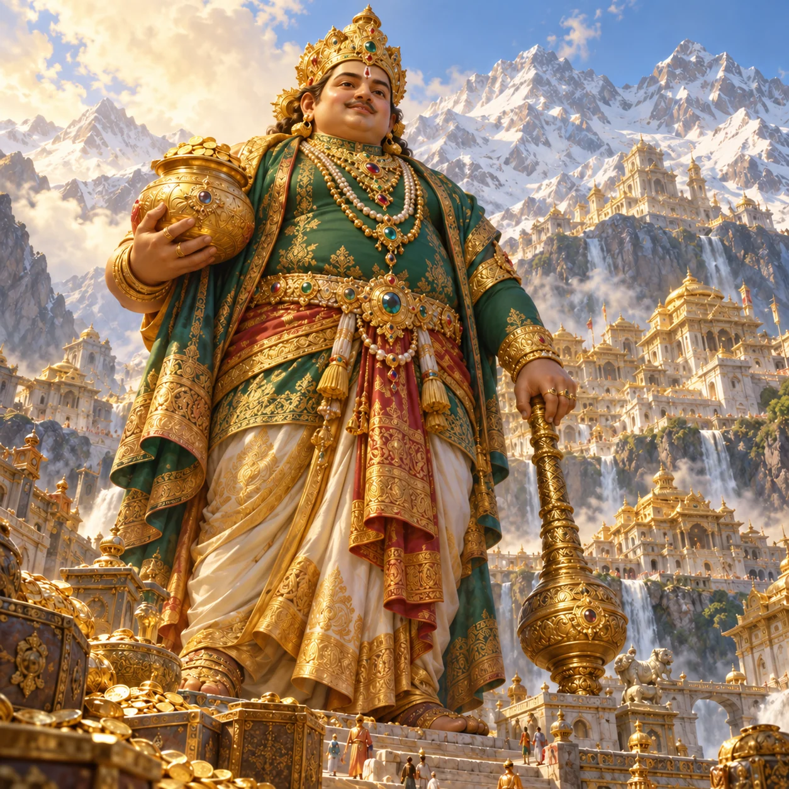
Plump jeweled wealth deity with money pot and club.
Aura: Glinting treasure and natural sunlight, wealth domain.
Audit ciri dan sumber
- Plump jeweled body fully dressed, one money pot and one club (kubera-c03)
- Himalayan residence and treasures (kubera-c04,c06)
Native edited output inspected: plump torso now opaque green tunic, two arms carrying money pot and club, jewels and Himalayan palace; no exposed torso or text.
Review sumberUse case: stylized-concept. Square premium Mythics painterly art, monumental low viewpoint, tiny environmental scale references, cinematic rich lighting and brush texture. Original respectful religious depiction, no text, watermark, frame, gore, nudity or film/game/anime imitation. KUBERA Hindu wealth god and king of yakshas, world protector of north (kubera-c01,c02). One plump fully clothed majestic male deity, one head exactly TWO arms (kubera-c03). A small money pot brimming coins held in one hand, a stout club in the other, abundant jewels on opaque traditional garments (kubera-c03). Stands before tiny Himalayan mountain palace and treasure architecture (kubera-c04,c06). Wealth power visually through treasure and glinting sunlight, no floating gold or spell effects, no extra limbs, wings or invented creatures. Dignified benevolent expression.
Revision: Edit clothing ONLY: entirely cover Kubera's exposed chest and belly with opaque green high-neck tunic under jewelry and outer robes. Do not alter his plump body, one head two arms, pot in one hand, club in other, jewels or Himalayan palace scene. No visible nipples or abdomen, no added limbs or text.
Māra Pāpīyān
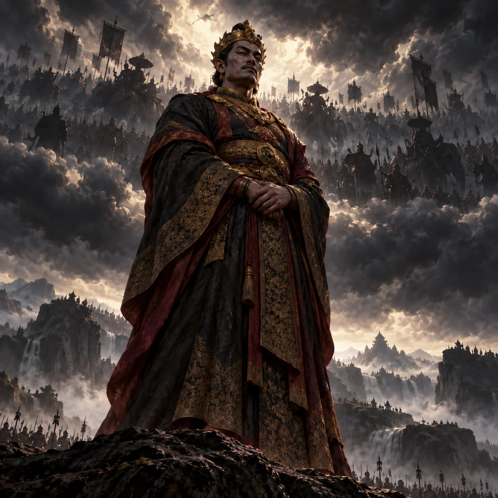
Editorial clothed humanlike Tempter commanding distant celestial army.
Aura: Documented celestial army and threatening natural shadow.
Audit ciri dan sumber
- One imposing deity, conservative clothed humanlike editorial anatomy
- Distant celestial army (mara-papiyan-c02)
- Menacing Tempter presence (mara-papiyan-c06), no invented attacks
Native edited output inspected: faint bottom-left lettering removed, two-arm clothed threatening deity, immense celestial army, no unsupported anatomy or emitted attacks.
Review sumberUse case: stylized-concept. Square premium Mythics painterly art, monumental low viewpoint, tiny environmental scale references, cinematic rich lighting/brush texture. Original religious dignity, no text, watermark, frame, gore, nudity or film/game/anime imitation. MARA PAPIYAN, Buddhist powerful obstructing deity and Tempter associated with desire/death (mara-papiyan-c01,c03,c06), ONE fully clothed imposing male figure in opaque ancient draped robes with human head exactly TWO arms, hands clasped at waist. In the distance a vast celestial army looms as shadowy armored silhouettes in stormlike dark clouds (mara-papiyan-c02). Menacing controlled face, no horns, wings, monstrous extra anatomy or fire/lightning attacks. Army is documented manifestation; dark cloud and low-angle cinematic shadows are editorial mood, no gore, no women or sexualized temptation.
Revision: Edit ONLY bottom-left corner: remove any faint signature, lettering or watermark from rock and replace seamlessly with plain matching painted rock texture. Keep entire image otherwise identical, including one fully clothed two-arm Mara and celestial army. Absolutely no text, watermark or signature anywhere.
Nabu
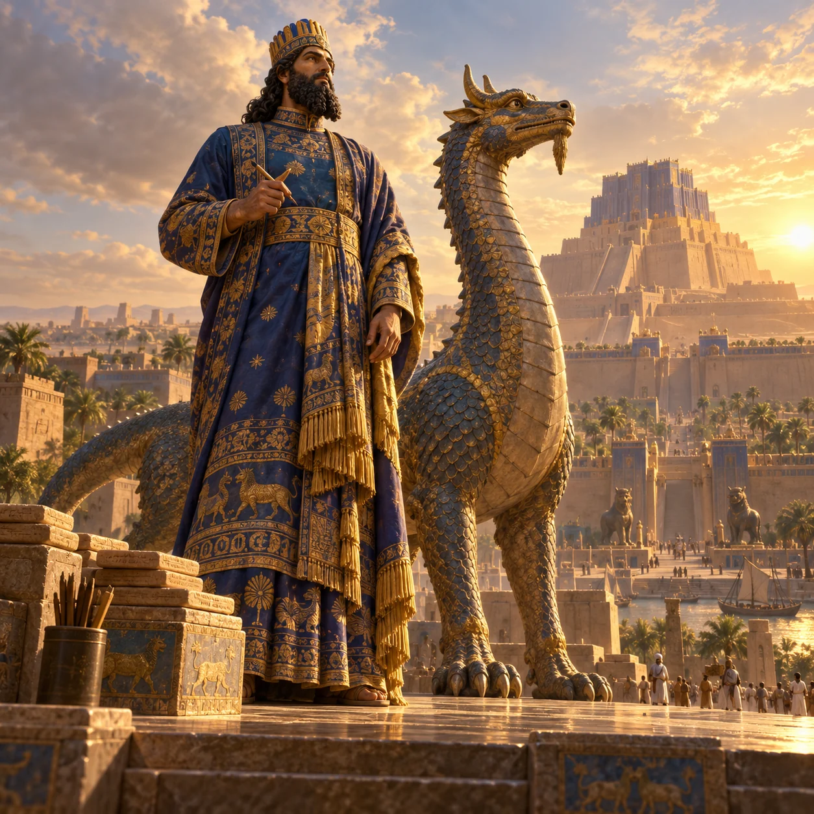
Robed stylus-bearing Nabu beside Mushhushshu.
Aura: Natural golden temple light, no emitted effect.
Audit ciri dan sumber
- One covered deity holding stylus (nabu-c06)
- One Mushhushshu companion, no invented emitted fire (nabu-c06)
- Borsippa scholarly temple (nabu-c01,c04)
Native inspected: fully robed two-arm deity with stylus, one unwinged long-necked dragon beside him, temple and tablets, no emitted powers or watermark.
Review sumberUse case: stylized-concept. Square premium Mythics painterly art, monumental low viewpoint, tiny environmental scale references, cinematic rich lighting/brush texture. Original religious dignity, no text, watermark, frame, gore, nudity or film/game/anime imitation. NABU, Babylonian patron of literacy, scribes and wisdom (nabu-c01). One majestic fully clothed male deity in high-neck opaque ancient Babylonian robe covering entire chest, one head TWO arms, holding ONE writing stylus while standing beside ONE Mushhushshu dragon (nabu-c06). Conservatively render named dragon as an unwinged long-necked scaled quadruped with ONE head and FOUR feet and single tail, no emitted fire or extra heads. Massive stepped Babylonian temple in distant Borsippa (nabu-c04), unreadable blank clay tablets on plinths. Natural gold dawn, scholarship and authority through immense scale, no floating glyphs or spell ribbons.
Nefertem
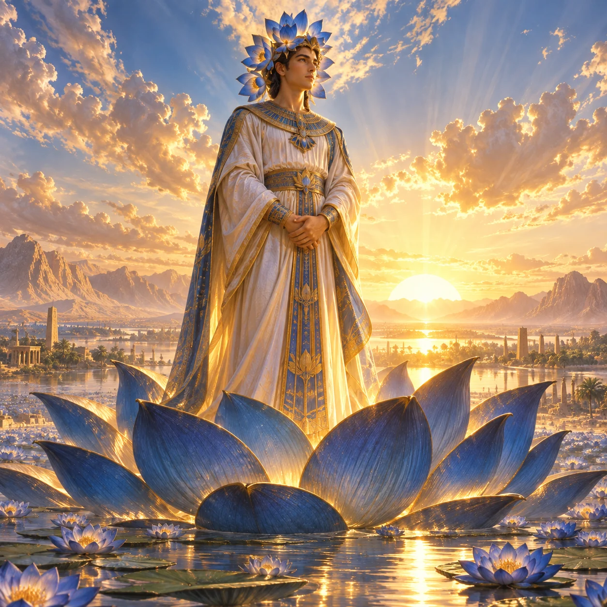
Covered youthful lotus god emerging from primordial waters.
Aura: First sunlight and lotus emergence (nefertem-c01,c02).
Audit ciri dan sumber
- Youthful man with blue lotus around head (nefertem-c04)
- Emergence in lotus on primordial waters (nefertem-c01)
- First sunlight radiance (nefertem-c02), opaque tunic
Native inspected: fully clothed young human deity with blue lotus headdress standing in vast blue lotus, two arms joined at waist, first sunlight and waters, no unsupported effects or text.
Review sumberUse case: stylized-concept. Square premium Mythics painterly art, monumental low viewpoint, tiny architecture/landscape scale references, cinematic rich light/brush texture, original religious dignity. NO TEXT whatsoever, no signatures/watermark/logos/border, gore, nudity or film/game/anime imitation. NEFERTEM, Egyptian god of first sunlight and blue lotus emerging at creation (nefertem-c01,c02). One youthful human-headed deity FULLY clothed in opaque high-neck linen tunic and long draped robe, chest entirely covered, exactly two arms with hands joined at waist. Blue lotus flowers surround his head (nefertem-c04); stands within ONE immense open blue lotus on primordial waters (nefertem-c01). First sunlight radiates gently from dawn and lotus surroundings, visible creation luminosity grounded in nefertem-c02, no fire attacks or scent shown as invented magical ribbons. Immense sacred presence, warm gold-blue palette.
Nergal
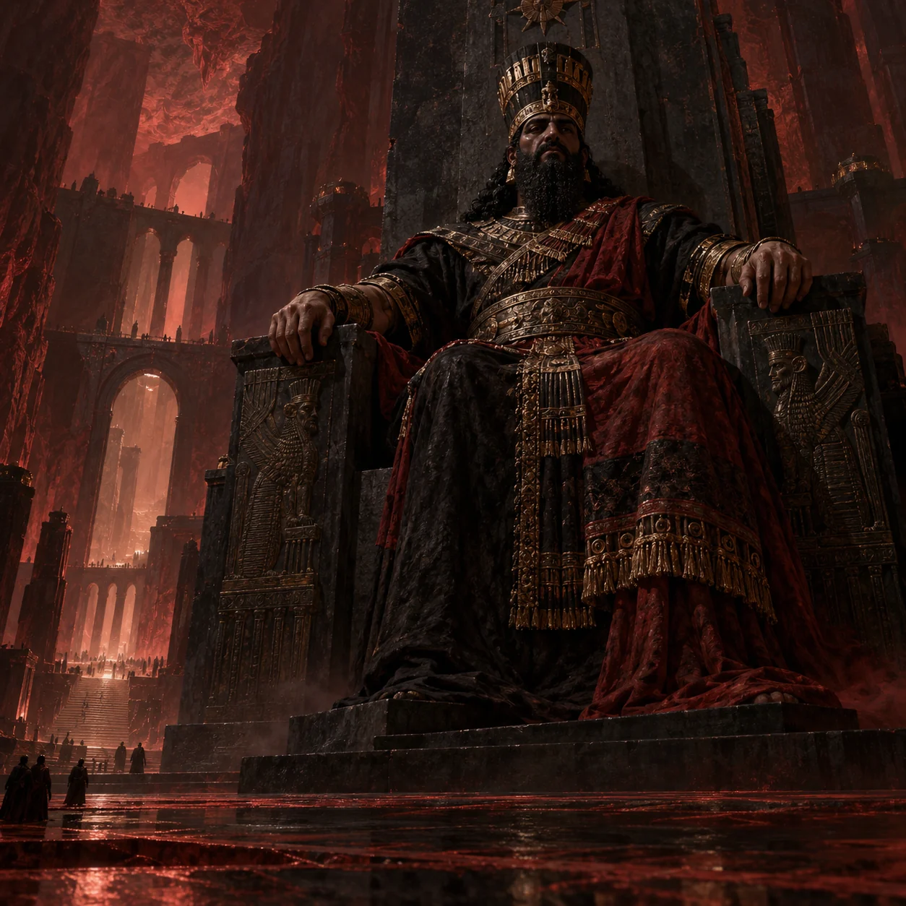
Editorial Mesopotamian humanlike underworld co-ruler.
Aura: Subterranean stone shadow and mineral reflected light; no emitted supernatural effect.
Audit ciri dan sumber
- War/death deity menacing regal presence (nergal-c01)
- Underworld co-ruler throne setting (nergal-c06)
- Clothed ordinary editorial body, no unsupported flame effects
Native inspected: fully clothed two-arm Mesopotamian king on underworld throne, monumental dark court with mineral red reflected light, no gore, fire emission or extra anatomy.
Review sumberUse case: stylized-concept. Square premium Mythics painterly art, monumental low viewpoint, tiny architecture/landscape scale references, cinematic rich light/brush texture, original religious dignity. NO TEXT whatsoever, no signatures/watermark/logos/border, gore, nudity or film/game/anime imitation. NERGAL, deity of war, death and disease, underworld co-ruler (nergal-c01,c06). One fully clothed menacing regal male figure in opaque ancient Mesopotamian royal war robes, one human head and TWO arms, hands resting on arms of immense dark stone throne in subterranean royal court. Tiny distant gateway arches show immense underworld scale. Dim natural reflected red mineral light and dust, no flames emitted from body, no lightning, no skull piles, no gore, no invented animal anatomy or weapons. War/death presence through severe dignity, weight and stone shadows; exact anatomy editorial.
Serket
Menunggu gambar yang lolos audit
Shamash
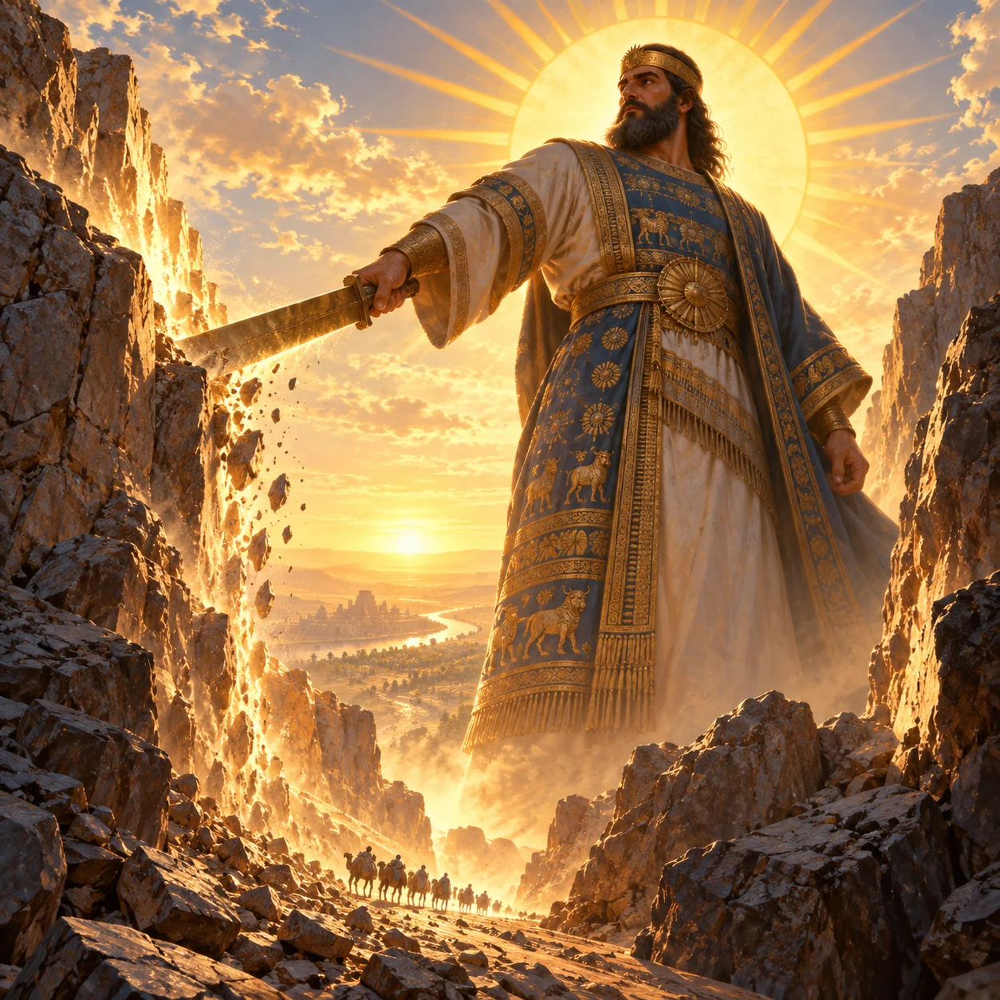
Sun deity opening dawn mountain path with blade.
Aura: Blazing sunrise through opened mountain path (shamash-c01,c06).
Audit ciri dan sumber
- One blade cutting mountain path at dawn (shamash-c06)
- Solar radiance (shamash-c01)
- Covered editorial humanlike two-arm body
Native inspected: fully clothed two-arm sun deity cutting mountains with one blade, strong solar disk/radiance and protected tiny caravan, no invented anatomy or text.
Review sumberUse case: stylized-concept. Square premium Mythics painterly art, monumental low viewpoint, tiny architecture/landscape scale references, cinematic rich light and brush texture, original respectful religious design. No text of any kind, watermark, signature, frame, gore, nudity or film/game/anime imitation. SHAMASH Mesopotamian sun and justice deity (shamash-c01,c05). One fully clothed male god in high-neck opaque Babylonian robes, one head and TWO arms, gripping one blade in simple pose cutting a path through immense mountains at dawn (shamash-c06). Intense solar light radiates through freshly opened mountain passage, majestic gold sun behind deity grounded in sun domain (shamash-c01). Visible sunrise power without extra limbs, invented fire weapons, wings or floating symbols; tiny caravan in far distance protected travel (shamash-c05). Strong monumental silhouette.
Susanoo
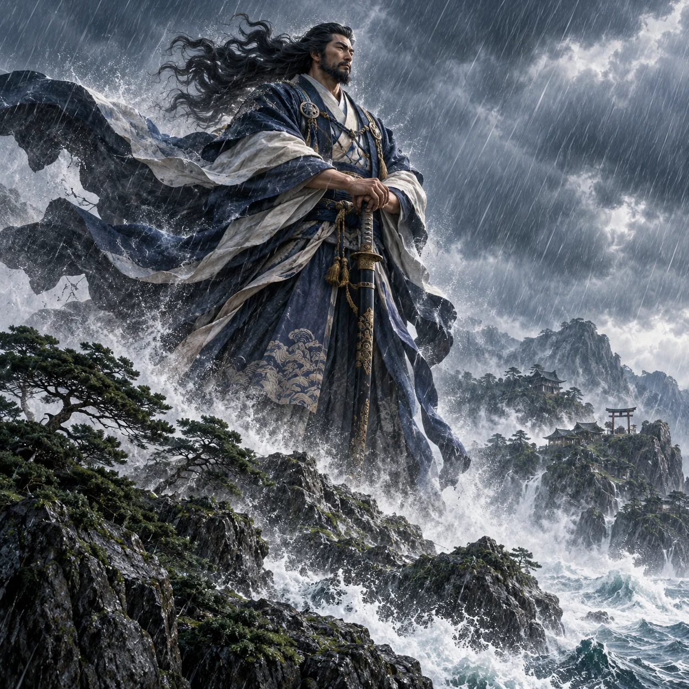
Wind and rain kami with documented Kusanagi sword.
Aura: Strong visible wind-driven rain, grounded in susanoo-c05.
Audit ciri dan sumber
- Documented wind and rain effects (susanoo-c05)
- Single Kusanagi sword (susanoo-c07)
- Covered conservative humanlike deity, two arms
Native inspected: fully clothed two-arm male kami, hands on sheathed sword, strong wind-driven rain, no lightning, extra heads or unsupported effects.
Review sumberUse case: stylized-concept. Square premium Mythics painterly art, monumental low viewpoint, tiny architecture/landscape scale references, cinematic rich light and brush texture, original respectful religious design. No text of any kind, watermark, signature, frame, gore, nudity or film/game/anime imitation. SUSANOO, respectfully shown as Japanese wind-and-rain kami (susanoo-c05), one fully clothed powerful male god in opaque layered ancient Japanese robes, one head TWO arms, both hands resting on ONE sheathed sword Kusanagi (susanoo-c07). Stands amid immense wind-driven rain over coastal mountains, robes and trees bend in strong wind, visible rain spray swirls around his monumental silhouette (susanoo-c05). Dramatic natural storm light, no lightning because research documents only wind/rain, no dragon battle, no wings, extra heads or fire. Clear simple two-arm pose.
Tsukuyomi
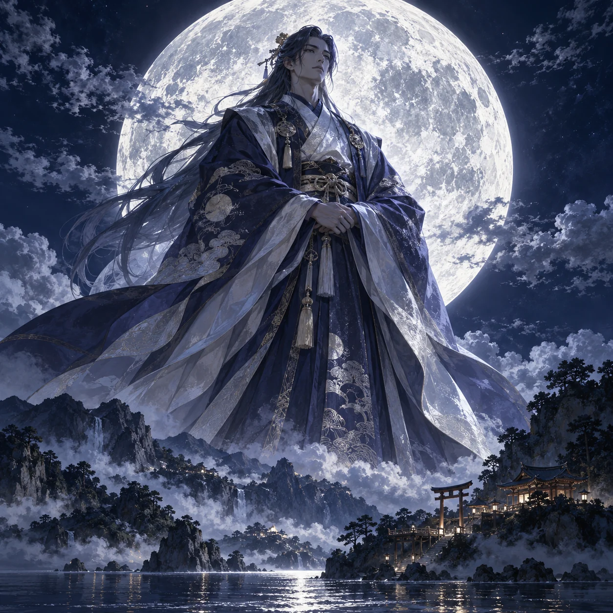
Conservative male moon/night kami in robes.
Aura: Silver lunar radiance grounded in moon/night domain.
Audit ciri dan sumber
- Male moon/night kami (tsukuyomi-c01,c02)
- Lunar radiance over night landscape (tsukuyomi-c02)
- Covered editorial two-arm body, no invented attributes
Native inspected: one covered male kami two arms clasped, immense lunar disk and silver night light, no extra eyes, limbs or unsupported spells.
Review sumberUse case: stylized-concept. Square premium Mythics painterly art, monumental low viewpoint, tiny architecture/landscape scale references, cinematic rich light and brush texture. Original respectful religious design, NO TEXT/signature/watermark/border, gore, nudity or film/game/anime imitation. TSUKUYOMI male Shinto moon and night kami (tsukuyomi-c01,c02), one dignified fully clothed male deity in opaque layered ancient Japanese robes covering torso and legs, one head TWO arms with hands quietly clasped at waist. Stands above tiny night mountains/shrine with an immense silver moon backdrop and cool moonlight filling his silhouette, visible lunar radiance grounded in moon domain (tsukuyomi-c02). No sword, wings, extra eyes or heads, no fire, lightning or invented spells. Majestic calm presence and deep indigo night (tsukuyomi-c01).
Wadjet
Menunggu gambar yang lolos audit
Wepwawet
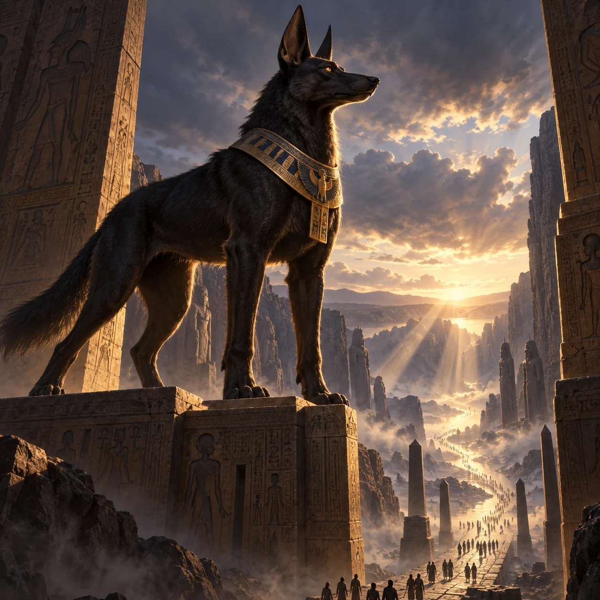
Single black jackal opener of underworld ways.
Aura: Opened underworld passage in natural shafts of light.
Audit ciri dan sumber
- Single black jackal, ordinary four legs/tail (wepwawet-c05)
- Open underworld path (wepwawet-c03)
- Royal monumental dignity, no invented emitted effect
Native inspected: one black jackal with four legs and single tail, open immense underworld passage with small silhouettes; eye gold is dawn reflection, no magical beam or extra anatomy.
Review sumberUse case: stylized-concept. Square premium Mythics painterly art, monumental low viewpoint, tiny architecture/landscape scale references, cinematic rich light and brush texture. Original respectful religious design, NO TEXT/signature/watermark/border, gore, nudity or film/game/anime imitation. WEPWAWET Egyptian opener of ways, funerary/war/royal deity (wepwawet-c01,c02). Select documented ONE BLACK JACKAL animal variant (wepwawet-c05): exactly one jackal head, four jackal legs, single tail, black fur, no human torso or wings. Immense dignified jackal stands on monumental ancient stone threshold; beneath and ahead an underworld path opens between cliffs for distant tiny spirits represented only by small silhouettes (wepwawet-c03). Natural shafts of dim dawn illuminate the open way, not magical laser or flame. Low viewpoint and huge silhouette, respectful animal deity.
Al-lāt
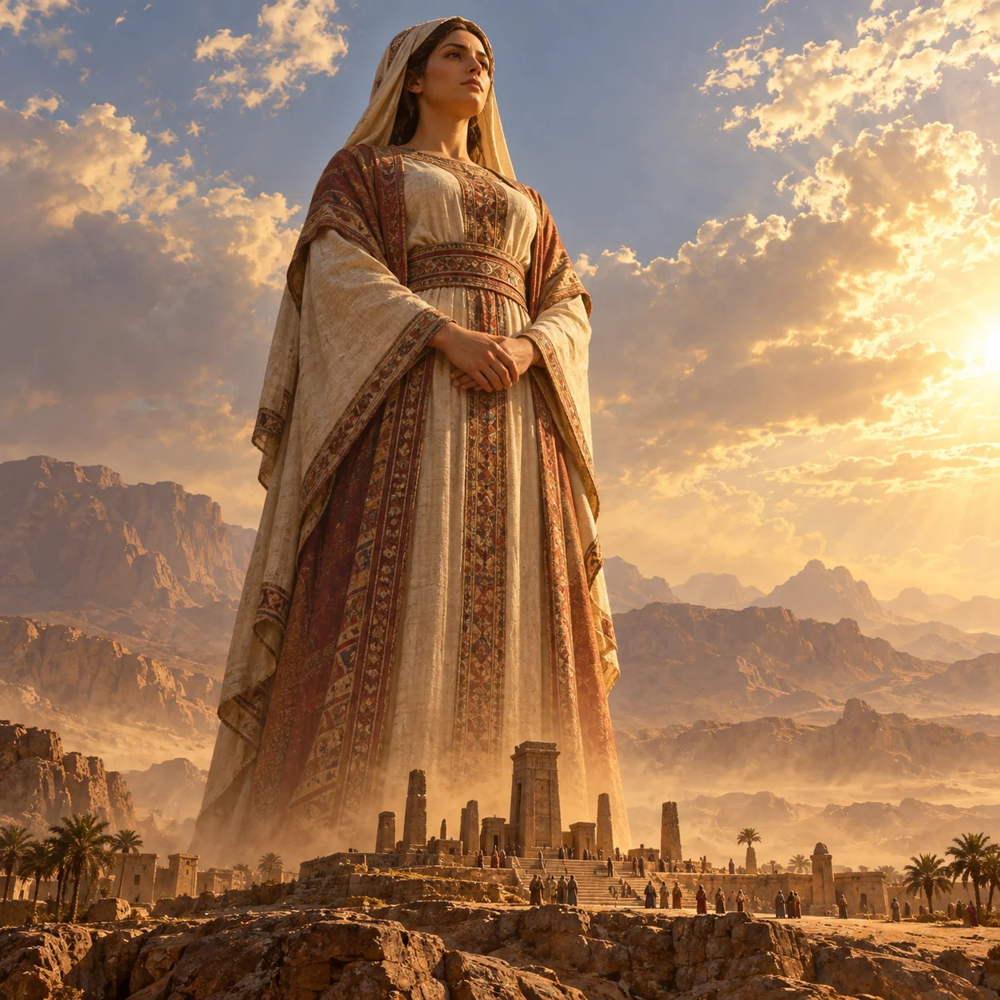
Editorial clothed humanlike Arabian goddess with no asserted iconography.
Aura: Natural desert light and monumental scale.
Audit ciri dan sumber
- Ancient Arabian/Syrian religious presence (al-lat-c01,c03)
- Conservative ordinary clothed two-arm editorial body
- No invented power effects or iconographic attributes
Native inspected: one modest clothed humanlike woman two arms clasped, desert sanctuary, no unsupported attributes or magic; editorial form clearly documented.
Review sumberUse case: stylized-concept. Square premium Mythics painterly art, monumental low viewpoint, tiny landscape scale references, cinematic natural lighting, rich brush texture, respectful original design. Absolutely no text/signature/watermark/border, gore, nudity or film/game/anime imitation. AL-LAT, pre-Islamic Arabian goddess known also in Syria (al-lat-c01,c03). Research gives no anatomy or power domains: depict conservatively ONE dignified fully clothed ordinary humanlike goddess, one head TWO arms with hands calmly clasped at waist, opaque high-neck ancient Arabian woven robe covering entire torso and legs, simple headcloth. Monumental presence above tiny ancient Arabian desert sanctuary and distant rocky mountains. Natural golden sun through desert dust, no emitted magic, no animal companion, wings, weapon, invented fertility or sky power. Exact clothes and human appearance editorial only.
Anahita
Menunggu gambar yang lolos audit
Chandra
Menunggu gambar yang lolos audit
Ennead
Menunggu gambar yang lolos audit
Ereshkigal
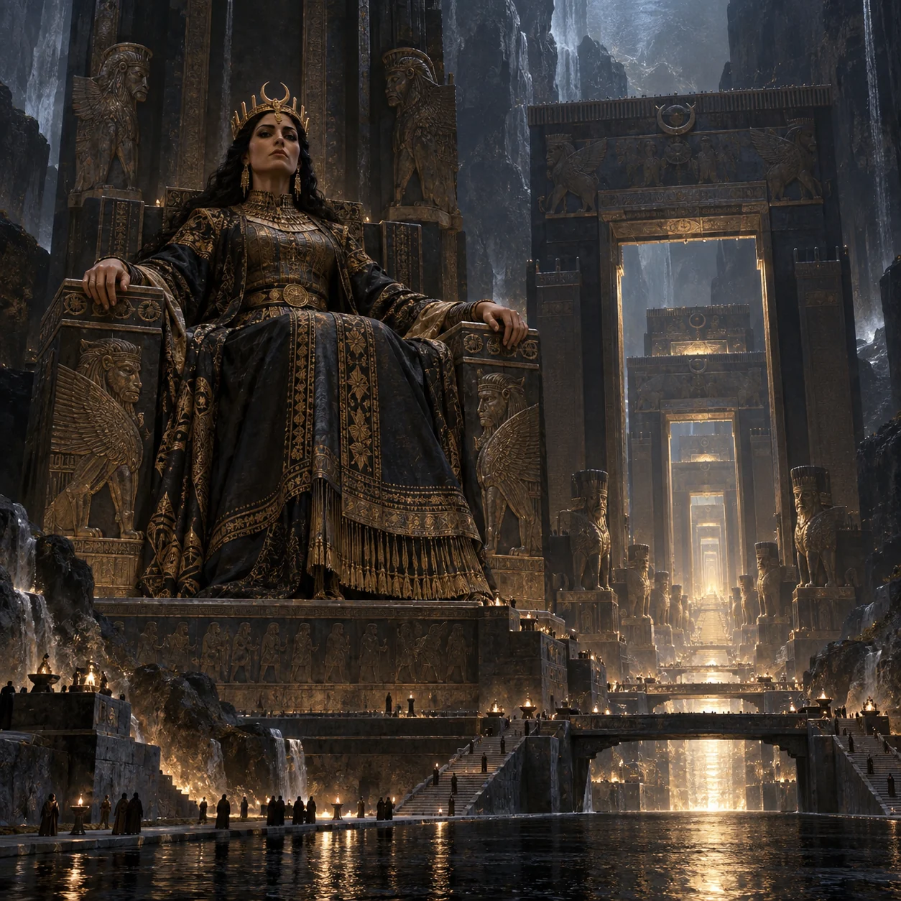
Editorial clothed humanlike underworld queen of Ganzir.
Aura: Underworld monumental stone shadows, no emitted power.
Audit ciri dan sumber
- Clothed majestic Queen of Dead (ereshkigal-c01)
- Ganzir palace and seven gates (ereshkigal-c03,c04)
- Conservative two-arm ordinary editorial form, no unsupported wings/talons
Native inspected: one fully clothed two-arm queen enthroned in monumental underworld palace, receding nested gate sequence, no wings/talons or deity-emitted fire; small architectural braziers ambient lighting.
Review sumberUse case: stylized-concept. Square premium Mythics painterly art, monumental low viewpoint, tiny architecture/landscape scale references, cinematic rich light/brush texture, original respectful religious design. NO TEXT, signature, watermark, border, gore, nudity or film/game/anime imitation. ERESHKIGAL, Mesopotamian Queen of Dead and underworld ruler (ereshkigal-c01,c02). ONE imposing fully clothed royal woman in opaque high-neck ancient Mesopotamian layered robes, one human head TWO arms, hands resting upon massive throne armrests. Throne within vast Ganzir underworld palace (ereshkigal-c03); behind her a sequence of SEVEN distinct nested gateways in one perspective corridor (ereshkigal-c04), receding small for immense scale. Dim natural mineral reflected light, deep stone shadows; terrifying sovereign dignity, no wings, talons, nudity, skull piles, fire attacks or unsupported monstrous anatomy.
Inari
Menunggu gambar yang lolos audit
Karṇa
Menunggu gambar yang lolos audit
Manāt
Menunggu gambar yang lolos audit
Mazu
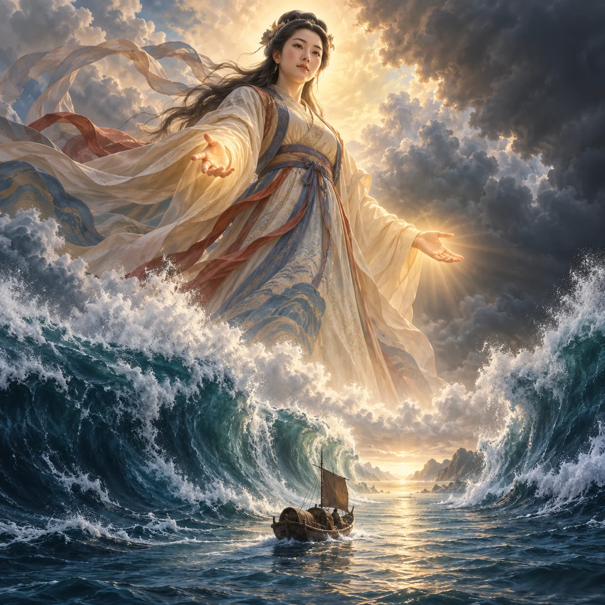
One majestic Mazu in respectful HUMAN FEMALE deified Lin Moniang rendering, modest uninscribed flowing Fujian-inspired robes, no unsupported imperial crown, weapon or extra body features. Ordinary two arms/two legs, compassionate powerful gaze; low-angle portrait above an immense stormy sea. MIRACULOUS SEA PROTECTION is visualized as a calm clear passage between huge waves around a tiny distant traditional fishing boat with unidentifiable covered sailors, safe rather than shipwreck deaths. Gentle warm divine light around her hands is an artistic visualization of recorded miraculous protection, not an added power type; seawater remains water rather than energy beams. No modern film/design.
Aura: Miraculous maritime protection, towering waves and a calm boat passage.
Audit ciri dan sumber
- Respectful woman-form sea goddess based on deified Lin Moniang (mazu-c01,mazu-c02)
- Miraculous protection at sea expressed through a safe water passage around a small boat (mazu-c03,mazu-c07,mazu-c08)
Viewed native PNG: modestly clothed human female divine figure with coherent two arms/hands, stormy sea waves flank calm passage with tiny safe fishing boat. Gentle hand light visualizes recorded miraculous sea protection; not a new elemental attack. No unsupported crown/weapon/body features/text.
Review sumberUse case: historical-scene. ONE square premium painterly naturalistic Mythics mythology encyclopedia illustration; dramatic low camera, monumental presence, small scale references, rich materials and cinematic contrast. Respect living religions. No text, letters, hieroglyphs, cuneiform, logos, border, watermark, gore or nudity. Never copy film/game/anime/comic character designs. Add no extra attributes or anatomy beyond the explicitly specified source-backed variant. One majestic Mazu in respectful HUMAN FEMALE deified Lin Moniang rendering, modest uninscribed flowing Fujian-inspired robes, no unsupported imperial crown, weapon or extra body features. Ordinary two arms/two legs, compassionate powerful gaze; low-angle portrait above an immense stormy sea. MIRACULOUS SEA PROTECTION is visualized as a calm clear passage between huge waves around a tiny distant traditional fishing boat with unidentifiable covered sailors, safe rather than shipwreck deaths. Gentle warm divine light around her hands is an artistic visualization of recorded miraculous protection, not an added power type; seawater remains water rather than energy beams. No modern film/design.
Moloch
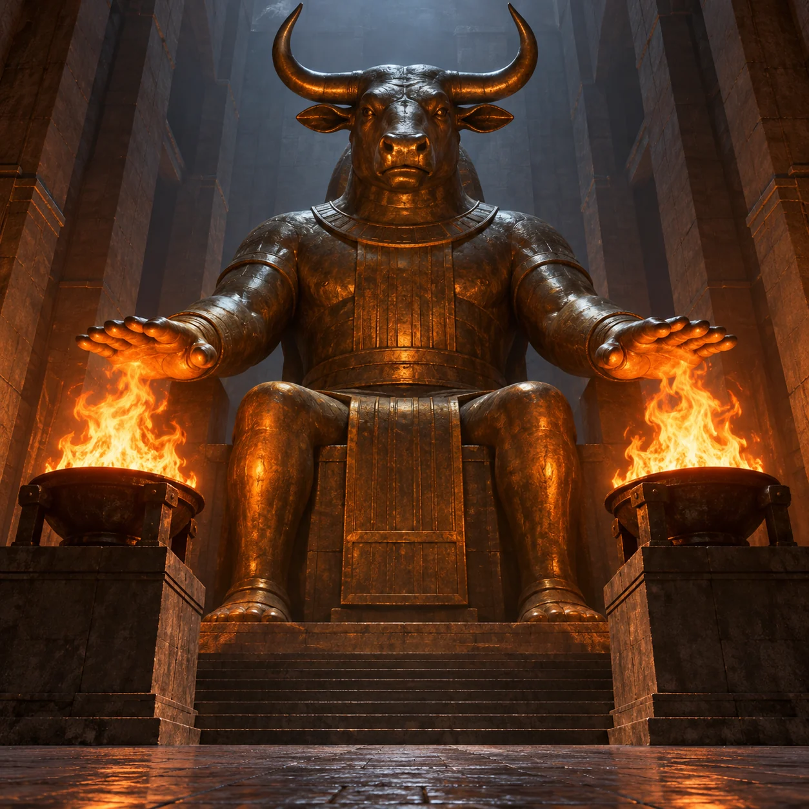
One overwhelming BULL-HEADED IDOL with OUTSTRETCHED HANDS OVER EXTERNAL FIRE, specifically the documented MEDIEVAL DEPICTION of Moloch, not asserted ancient Canaanite archaeological reality. Single metal bull head with two natural horns, two humanoid idol arms and two coherent idol legs/seated base; hands extended palms above two external braziers. Monumental low viewpoint, glowing fire reflection on bronze and vast empty masonry sanctuary. No children, victims, sacrifice action, blood, gore, nudity or weapon. Flames remain external below hands, not unsupported emitted attacks. Uninscribed metal/stone, no writing. Terrifying idol presence.
Aura: Strong external fire and bronze reflections under outstretched idol hands.
Audit ciri dan sumber
- Bull-headed idol with outstretched hands over fire in medieval depiction (moloch-c04)
- Traditionally named deity depicted with no victim or ritual harm (moloch-c01,moloch-c05)
Viewed native PNG: seated bull-headed bronze idol with two natural horns, two outstretched arms/hands and two legs, external braziers below hands. No children/victims/sacrifice action or emission from body. Selected medieval depiction is explicit, contested historical identity retained in artistic choices. No text/gore.
Review sumberUse case: historical-scene. ONE square premium painterly naturalistic Mythics mythology encyclopedia illustration; dramatic low camera, monumental presence, small scale references, rich materials and cinematic contrast. Respect living religions. No text, letters, hieroglyphs, cuneiform, logos, border, watermark, gore or nudity. Never copy film/game/anime/comic character designs. Add no extra attributes or anatomy beyond the explicitly specified source-backed variant. One overwhelming BULL-HEADED IDOL with OUTSTRETCHED HANDS OVER EXTERNAL FIRE, specifically the documented MEDIEVAL DEPICTION of Moloch, not asserted ancient Canaanite archaeological reality. Single metal bull head with two natural horns, two humanoid idol arms and two coherent idol legs/seated base; hands extended palms above two external braziers. Monumental low viewpoint, glowing fire reflection on bronze and vast empty masonry sanctuary. No children, victims, sacrifice action, blood, gore, nudity or weapon. Flames remain external below hands, not unsupported emitted attacks. Uninscribed metal/stone, no writing. Terrifying idol presence.
Monthu
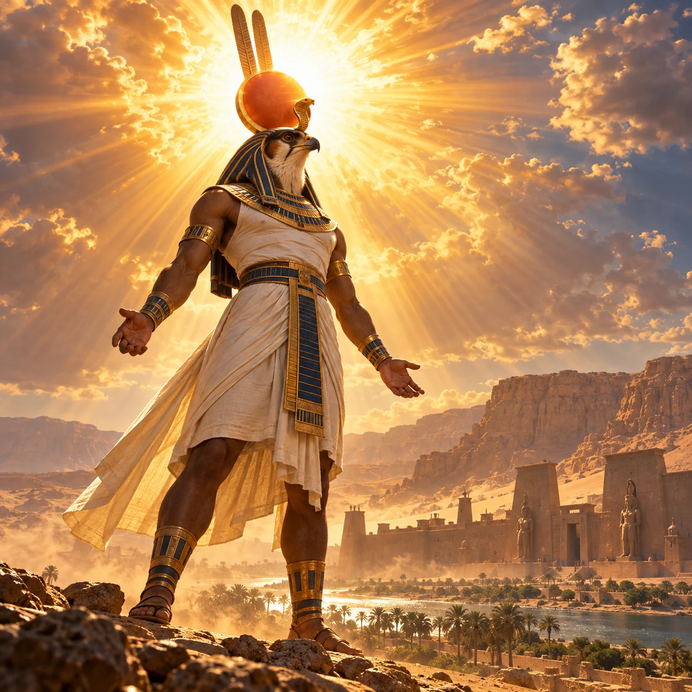
One imposing Egyptian Monthu/Montu in the FALCON-HEADED MAN variant, fully modest plain linen ceremonial clothes, ordinary human two arms/two legs and single falcon head. Crown has exactly ONE SOLAR DISK, TWO LONG FEATHERS and ONE uraeus cobra emblem, all specified iconography. No extra wings, bull head or head-count blend. SCORCHING SOLAR RADIANCE erupts behind the crown disk like a powerful sun flare, illuminating a Theban desert landscape and very small temple walls: documented Montu-Ra scorching sun association. Majestic war-god stance, open hands without unsupported staff/sword, readable anatomy through the radiance. All surfaces uninscribed; no hieroglyphs/cuneiform. Respectful divine authority, no gore.
Aura: Scorching solar radiance centered on the source-described disk.
Audit ciri dan sumber
- Falcon-headed human form with solar disk, two feathers and single uraeus emblem (monthu-c05)
- Conquering war vitality and scorching solar effect (monthu-c01,monthu-c03)
Viewed native PNG: falcon-headed man with one solar disk, exactly two feathers and one uraeus emblem, human two arms/two legs in modest clothes. Intense disk-centered sun radiance corresponds to scorching Montu-Ra role; no bull-head/wings/weapon blend. Architectural/clothing ornament editorial; no readable inscriptions, text or gore.
Review sumberUse case: historical-scene. ONE square premium painterly naturalistic Mythics mythology encyclopedia illustration; dramatic low camera, monumental presence, small scale references, rich materials and cinematic contrast. Respect living religions. No text, letters, hieroglyphs, cuneiform, logos, border, watermark, gore or nudity. Never copy film/game/anime/comic character designs. Add no extra attributes or anatomy beyond the explicitly specified source-backed variant. One imposing Egyptian Monthu/Montu in the FALCON-HEADED MAN variant, fully modest plain linen ceremonial clothes, ordinary human two arms/two legs and single falcon head. Crown has exactly ONE SOLAR DISK, TWO LONG FEATHERS and ONE uraeus cobra emblem, all specified iconography. No extra wings, bull head or head-count blend. SCORCHING SOLAR RADIANCE erupts behind the crown disk like a powerful sun flare, illuminating a Theban desert landscape and very small temple walls: documented Montu-Ra scorching sun association. Majestic war-god stance, open hands without unsupported staff/sword, readable anatomy through the radiance. All surfaces uninscribed; no hieroglyphs/cuneiform. Respectful divine authority, no gore.
Morgan le Fay
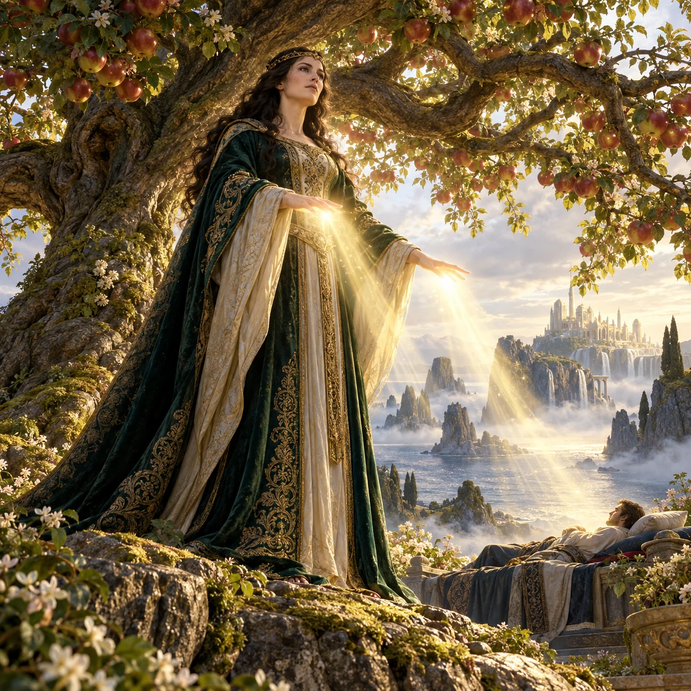
One majestic MORGAN LE FAY in the EARLY HEALER OF AVALON variant: ordinary human woman with two arms/two legs, completely modest medieval gown and plain simple circlet (queen role), wise ambiguous resolute expression. Stand on the Isle of Apples with enormous apple-tree branches and sea-mist horizon, low-angle monumental presence. Visible gentle HEALING LIGHT from her hands falls toward a small distant fully clothed recovering male figure on a modest couch, allegory of Arthur taken to Avalon, no injury detail or gore. Light is artistic visualization of sourced healing and enchantment, not a claim of laser attack, death magic or elemental fire. No fairy wings, antlers, horns or modern movie/game costume; no blended Mordred-mother depiction.
Aura: Gentle powerful healing light in monumental Avalon scene.
Audit ciri dan sumber
- Ordinary woman enchantress/healer in Avalon with queenly bearing (morgan-le-fay-c01,morgan-le-fay-c03,morgan-le-fay-c07)
- Healing effect visualizes source-described great healer role (morgan-le-fay-c10,morgan-le-fay-c14)
Viewed native PNG: one modestly clothed human woman with two coherent arms/hands, queenly circlet and apple-tree Avalon scene; healing radiance from hands toward small fully clothed reclining Arthur representation. Healing glow artistic manifestation of healer/enchantress role; no wings, antlers, death/fire attack, text or gore. Early healer variant avoids later Mordred conflation.
Review sumberUse case: historical-scene. ONE square premium painterly naturalistic Mythics mythology encyclopedia illustration; dramatic low camera, monumental presence, small scale references, rich materials and cinematic contrast. Respect living religions. No text, letters, hieroglyphs, cuneiform, logos, border, watermark, gore or nudity. Never copy film/game/anime/comic character designs. Add no extra attributes or anatomy beyond the explicitly specified source-backed variant. One majestic MORGAN LE FAY in the EARLY HEALER OF AVALON variant: ordinary human woman with two arms/two legs, completely modest medieval gown and plain simple circlet (queen role), wise ambiguous resolute expression. Stand on the Isle of Apples with enormous apple-tree branches and sea-mist horizon, low-angle monumental presence. Visible gentle HEALING LIGHT from her hands falls toward a small distant fully clothed recovering male figure on a modest couch, allegory of Arthur taken to Avalon, no injury detail or gore. Light is artistic visualization of sourced healing and enchantment, not a claim of laser attack, death magic or elemental fire. No fairy wings, antlers, horns or modern movie/game costume; no blended Mordred-mother depiction.
Nun
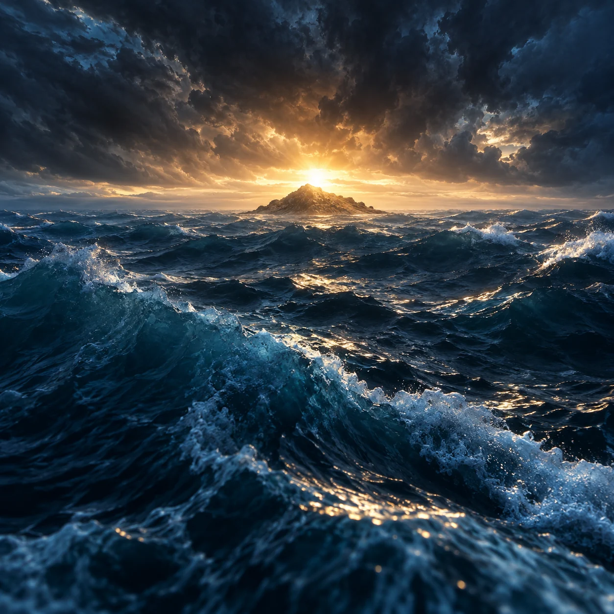
NUN represented ANICONICALLY as the primordial Egyptian WATERY ABYSS at creation, an immense dark-blue sea stretching below a tiny first MOUND OF LAND emerging from the waters. Low viewpoint near huge foreground waves, cosmic curved horizon and vast precreation cloud darkness. The first sun-like dawn light at distant mound references source emergence of the creator sun, but no humanoid gods, faces in water, frog head or dragon shape. Monumental cosmic water-scale is the documented deity presence. No text, glyphs, temple inscriptions, energy beams, fire or imagined body. Powerful awe and elemental watery depth, no deity merged with ordinary human nun.
Aura: Primordial oceanic scale and the first emerging land mound.
Audit ciri dan sumber
- Primordial watery abyss/chaos expressed as cosmic water rather than invented body (nun-q276563-c01,nun-q276563-c02,nun-q276563-c06)
- First land mound emerging from Nun waters (nun-q276563-c05)
Viewed native PNG: only immense primordial dark waters, clouded precreation horizon and small first mound under sunlike dawn. No invented humanoid/frog/dragon body or faces; dawn/land shape symbolic editorial rendering. Cosmic watery abyss and first emerging mound match source, no text or emitted attack.
Review sumberUse case: historical-scene. ONE square premium painterly naturalistic Mythics mythology encyclopedia illustration; dramatic low camera, monumental presence, small scale references, rich materials and cinematic contrast. Respect living religions. No text, letters, hieroglyphs, cuneiform, logos, border, watermark, gore or nudity. Never copy film/game/anime/comic character designs. Add no extra attributes or anatomy beyond the explicitly specified source-backed variant. NUN represented ANICONICALLY as the primordial Egyptian WATERY ABYSS at creation, an immense dark-blue sea stretching below a tiny first MOUND OF LAND emerging from the waters. Low viewpoint near huge foreground waves, cosmic curved horizon and vast precreation cloud darkness. The first sun-like dawn light at distant mound references source emergence of the creator sun, but no humanoid gods, faces in water, frog head or dragon shape. Monumental cosmic water-scale is the documented deity presence. No text, glyphs, temple inscriptions, energy beams, fire or imagined body. Powerful awe and elemental watery depth, no deity merged with ordinary human nun.
Rudra
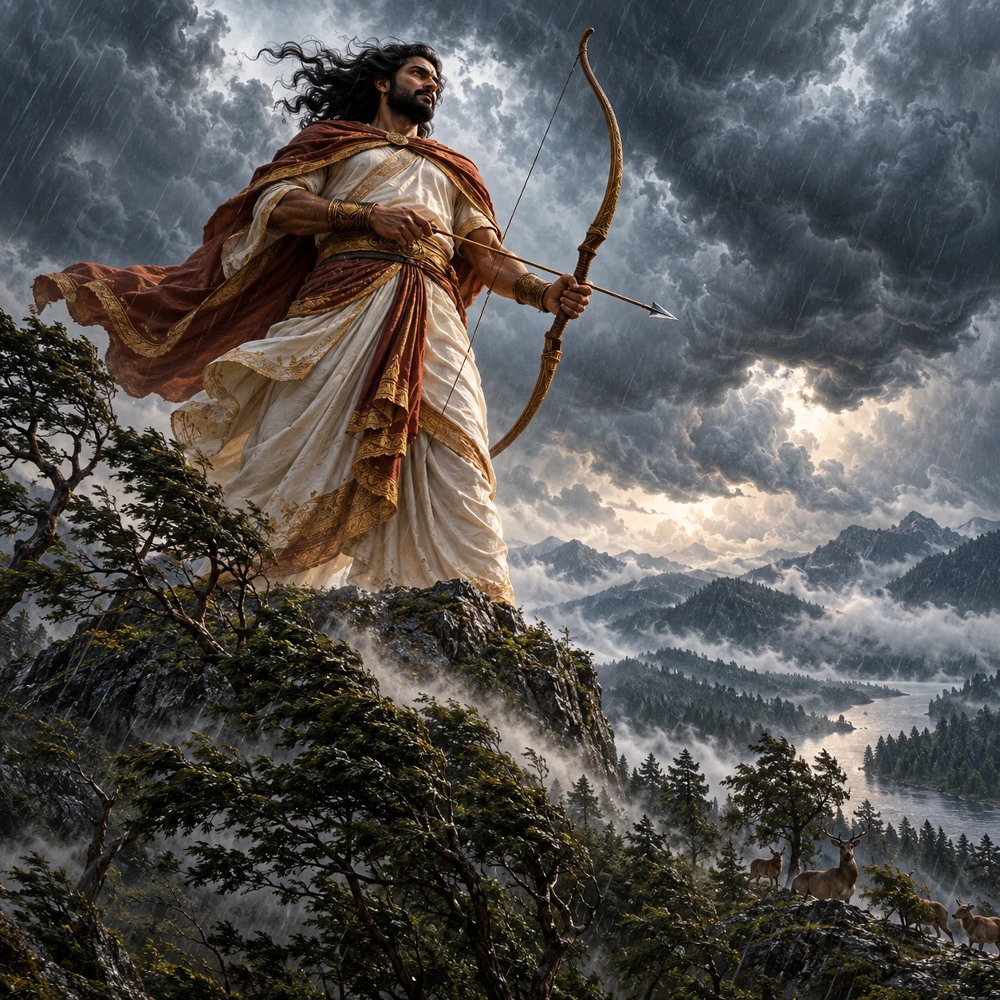
One majestic RUDRA, Rigvedic WIND/STORM ARCHER, respectfully rendered as an ordinary humanlike masculine figure in fully modest uninscribed South Asian ceremonial robes, two arms/two legs and one ordinary head. Hold a simple BOW and ONE ARROW (source archer/arrow attribute) in coherent hands. Monumental low viewpoint over small wooded ridges, POWERFUL WIND and turbulent storm clouds visibly bend branches and drive rain/mist; distant ordinary wildlife takes shelter. No lightning beam, trident, third eye, crescent moon, blue skin, snakes, extra arms or unsupported later Shiva imagery. Fierce storm authority with compassionate undertone; no gore.
Aura: Strong storm wind, bending branches and driving rain around the archer.
Audit ciri dan sumber
- Rigvedic archer with a bow and arrow, ordinary humanlike rendering (rudra-c05)
- Powerful wind/storm domain and wildlife association (rudra-c01,rudra-c06)
Viewed native PNG: one ordinary humanlike archer in modest robes with two arms holding one bow and one arrow; windblown hair/cloth, rain/cloud turbulence and bent trees with distant deer. No trident, third eye, crescent, blue skin, extra arms or lightning attack assumed; face/robe artistically generic. No text/gore.
Review sumberUse case: historical-scene. ONE square premium painterly naturalistic Mythics mythology encyclopedia illustration; dramatic low camera, monumental presence, small scale references, rich materials and cinematic contrast. Respect living religions. No text, letters, hieroglyphs, cuneiform, logos, border, watermark, gore or nudity. Never copy film/game/anime/comic character designs. Add no extra attributes or anatomy beyond the explicitly specified source-backed variant. One majestic RUDRA, Rigvedic WIND/STORM ARCHER, respectfully rendered as an ordinary humanlike masculine figure in fully modest uninscribed South Asian ceremonial robes, two arms/two legs and one ordinary head. Hold a simple BOW and ONE ARROW (source archer/arrow attribute) in coherent hands. Monumental low viewpoint over small wooded ridges, POWERFUL WIND and turbulent storm clouds visibly bend branches and drive rain/mist; distant ordinary wildlife takes shelter. No lightning beam, trident, third eye, crescent moon, blue skin, snakes, extra arms or unsupported later Shiva imagery. Fierce storm authority with compassionate undertone; no gore.
Tammuz
Menunggu gambar yang lolos audit
Tiamat
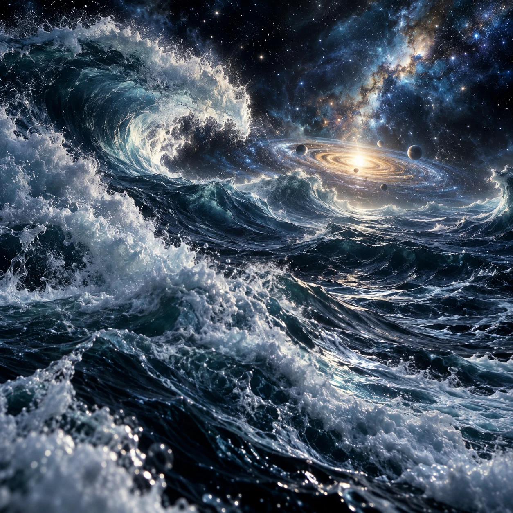
TIAMAT represented ANICONICALLY as the COSMIC OCEAN: unimaginably vast dark salt-water swells arch around a small distant emerging cosmos, star-reflecting water and enormous foaming wave crests dominate the low foreground. Waters fill the frame with violent primordial power, cosmic scale and star-lit atmospheric contrast. NO DRAGON, serpent, humanoid woman, head, eyes, horns, wings or beast-shaped waves: scholarship in the accepted claims cautions dragon form cannot be established. Water/stellar imagery alone depicts the cosmic ocean and source role in forming the cosmos after defeat; no on-screen battle, dismemberment, victims, gore, extra gods, tablets with writing or invented elemental attack.
Aura: Overwhelming primordial oceanic swells and cosmic scale.
Audit ciri dan sumber
- Cosmic ocean expressed entirely as immense water (tiamat-c01,tiamat-c02)
- Aniconic cosmic scale references cosmos formation without assuming disputed dragon form (tiamat-c04,tiamat-c05)
Viewed native PNG: immense cosmic-ocean waves with distant star/cosmic formations, no dragon/serpent head, eyes, humanoid body, wings or beast-shaped anatomy. Deliberate aniconic choice follows uncertainty of dragon form; cosmos/light scale symbolic rather than exact ancient astronomical model. No battle/gore/text.
Review sumberUse case: historical-scene. ONE square premium painterly naturalistic Mythics mythology encyclopedia illustration; dramatic low camera, monumental presence, small scale references, rich materials and cinematic contrast. Respect living religions. No text, letters, hieroglyphs, cuneiform, logos, border, watermark, gore or nudity. Never copy film/game/anime/comic character designs. Add no extra attributes or anatomy beyond the explicitly specified source-backed variant. TIAMAT represented ANICONICALLY as the COSMIC OCEAN: unimaginably vast dark salt-water swells arch around a small distant emerging cosmos, star-reflecting water and enormous foaming wave crests dominate the low foreground. Waters fill the frame with violent primordial power, cosmic scale and star-lit atmospheric contrast. NO DRAGON, serpent, humanoid woman, head, eyes, horns, wings or beast-shaped waves: scholarship in the accepted claims cautions dragon form cannot be established. Water/stellar imagery alone depicts the cosmic ocean and source role in forming the cosmos after defeat; no on-screen battle, dismemberment, victims, gore, extra gods, tablets with writing or invented elemental attack.
Yōkai
Menunggu gambar yang lolos audit